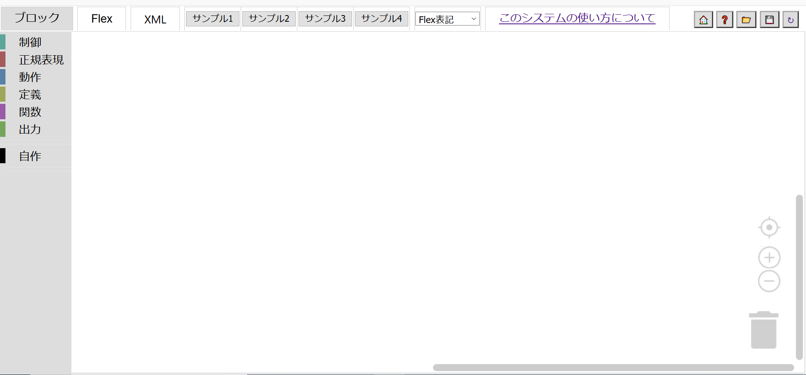
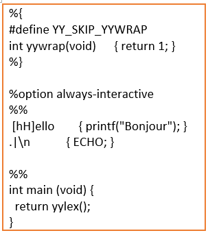
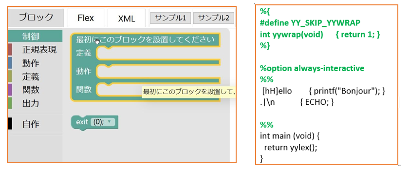
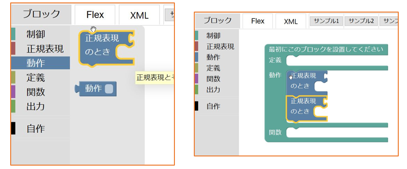
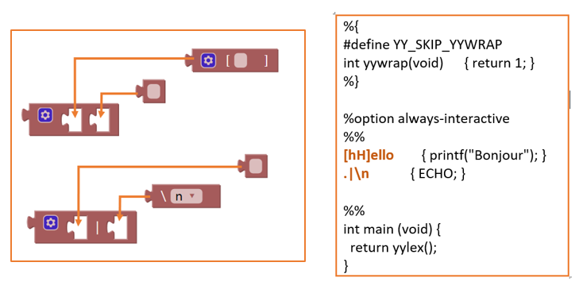
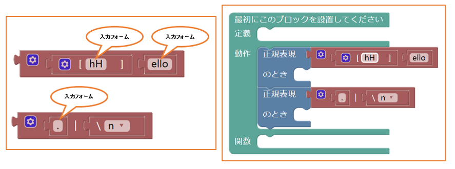
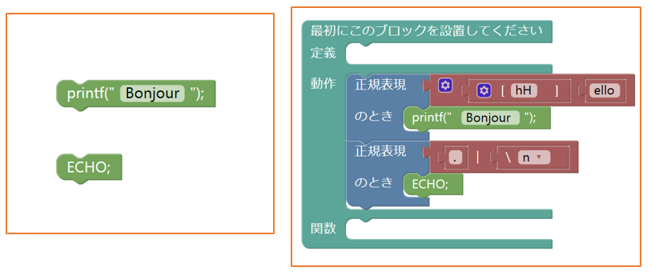
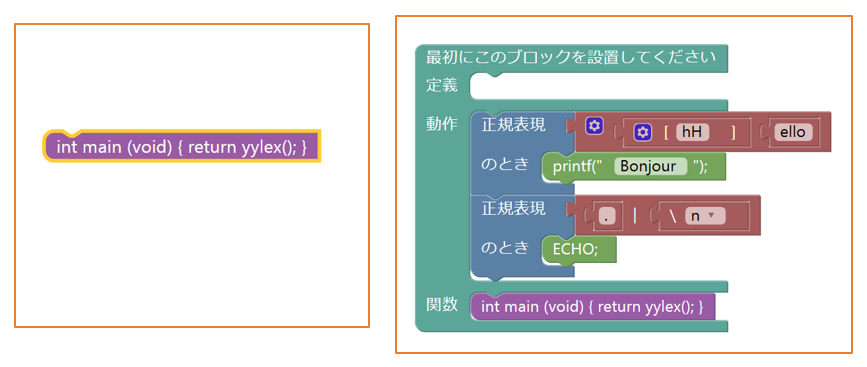

ブロックの組み立て方(Flex編)
下図は、Blockly for Flex のワークスペースにブロックが何も組み立てられていない初期状態です。
以下のFlexコードをBlocklyで組み立てます。
FlexコードをBlocklyで組み立てる手順
①制御ブロックの設置 ブロックメニュー部の制御カテゴリをクリックして、その一番上のブロックをワークスペース部にドラッグします(左図)。 このブロックは、右図のコードの緑字に該当します。
②動作ブロックの接続 ブロックメニュー部の動作カテゴリをクリックして、その一番上のブロックを2個ワークスペース部にドラッグします(左図)。 それらのブロックをさきほど手順①でワークスペース部に配置した制御ブロックの動作の部分に接続します(右図)。
③正規表現ブロックの用意 ブロックメニュー部の正規表現カテゴリをクリックして、それらから左図(＊矢印は後付け)のような6種類のブロックを選択してワークスペース部にドラッグします。そして矢印に従ってソケット(穴)に接続します。 接続したブロックは、右図のコードのオレンジ字で強調している部分に該当します。
④正規表現ブロックの接続 さきほどのソースコードから、正規表現ブロックの3か所の入力フォームに左図のように入力します。 接続された2つの正規表現ブロックを右図のように動作ブロック(青色)に接続します。
⑤出力ブロックの接続 ブロックメニュー部の出力カテゴリから、左図の2つのブロックを選択して入力フォームに"Bonjour"と入力します。 それら2つの出力ブロックを右図のように動作ブロック(青色)に接続します。
⑥関数ブロックの接続 ブロックメニュー部の関数カテゴリから、左図のブロックを選択します。 その選択した関数ブロックを右図のように制御ブロック(緑色)に接続します。
ブロックの完成図
下図は、前項の手順で組み立てたワークスペース部の完成図です。